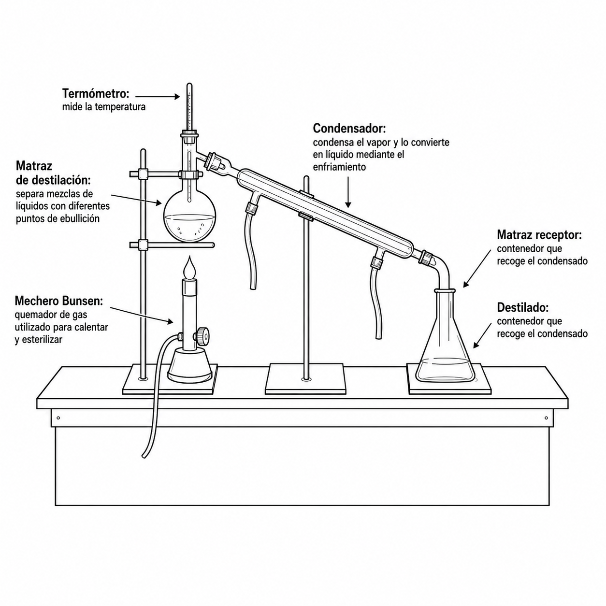
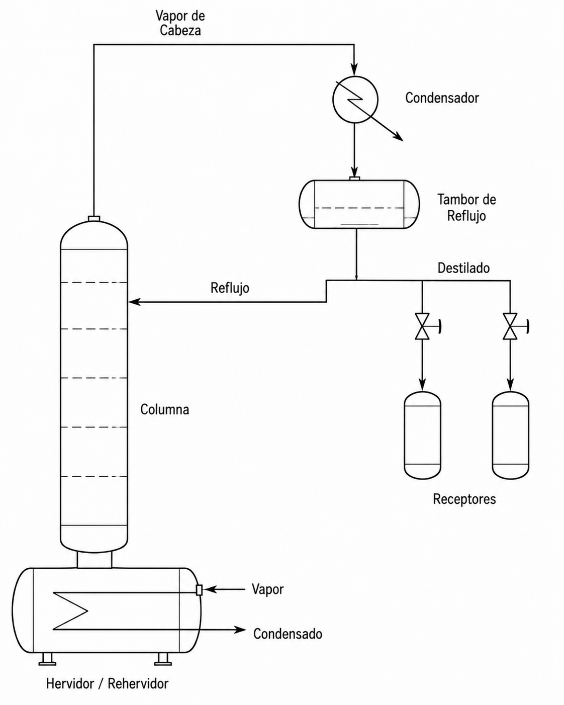
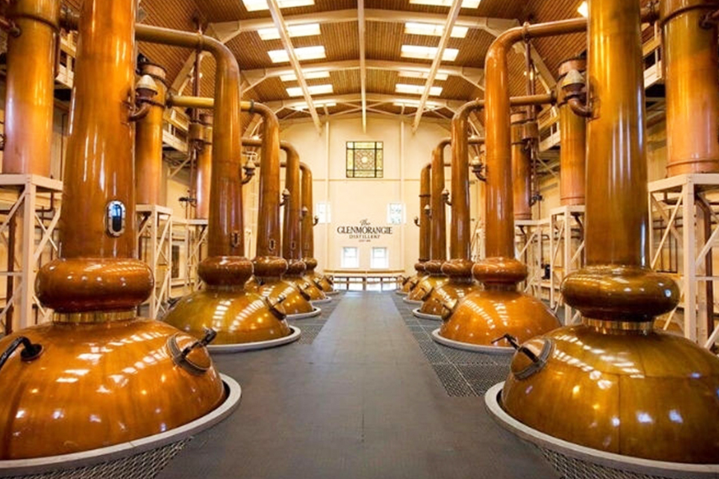

IQYA-2031 · Proyecto de Operaciones Unitarias
Destilación diferencial
Destilación por lotes, naturaleza transitoria y la ecuación de Rayleigh.

Contenido de la sesión
- 01Fundamentos y principiosConceptos básicos, naturaleza transitoria y balance de materia
- 02Modelado matemáticoEcuación de Rayleigh y métodos de solución
- 03Equipamiento y diseñoComponentes, columnas multietapa y reflujo
- 04Aplicaciones industrialesFarmacéutica, química fina, bebidas y desarrollo
Objetivo: comprender la destilación diferencial como un proceso transitorio, dominar la ecuación de Rayleigh y su resolución, y reconocer su papel en la producción de alto valor.
Fundamentos y principios
Qué es la destilación por lotes, su naturaleza transitoria y cómo se visualiza en el diagrama T-x-y.

Sistema industrial de destilación por lotes: calderín, columna, condensador y receptores de destilado.
Destilación por lotes
Es un proceso donde:
- Se carga una cantidad finita de mezcla líquida en un recipiente (calderín).
- Se aporta energía térmica hasta llevar la mezcla a ebullición.
- El vapor generado, enriquecido en el componente más volátil, se retira continuamente.
- Ese vapor se condensa y el líquido resultante (destilado) se recolecta.
- El proceso se detiene al alcanzar el grado de separación deseado.
La ecuación fundamental que describe el proceso es la ecuación de Rayleigh, que deduciremos en el Módulo 2.

Montaje de laboratorio: cada componente rotulado con su función.
Aparato de destilación simple
Un montaje básico de destilación diferencial consta de:
La naturaleza transitoria del proceso
Mezcla rica en volátil
- Temperatura de ebullición relativamente baja
- Alta concentración del componente volátil ($x_{W0}$)
Las variables cambian
- La composición del líquido ($x_W$) disminuye
- La composición del vapor ($y$) también disminuye
- La temperatura de ebullición aumenta
Mezcla empobrecida
- Temperatura de ebullición más alta
- Baja concentración del componente volátil ($x_{Wf}$)
Evolución temporal: la composición del volátil en el calderín ($x_W$) y en el destilado instantáneo ($y_D$) disminuyen, mientras la temperatura ($T_W$) aumenta continuamente.
El proceso sobre el diagrama T-x-y
Carga inicial
Cargamos el líquido inicial.
Ventajas y limitaciones
Ventajas
- Flexibilidad para procesar diferentes mezclas
- Menor inversión inicial de capital
- Ideal para pequeñas escalas de producción
- Capacidad para alcanzar altas purezas
- Adecuada para producción intermitente o estacional
Limitaciones
- Ineficiente para grandes volúmenes
- Mayores costos operativos por unidad de producto
- Tiempos muertos entre cargas
- Dificultad para mantener consistencia entre lotes
- Mayor consumo energético por kg de producto
La elección entre destilación por lotes y continua es una decisión estratégica y económica impulsada por la escala de producción, la variedad de productos y el valor de mercado.
Contexto industrial y aplicaciones

Equipamiento y diseño
Componentes de un destilador real, columnas multietapa y el papel del reflujo.
Anatomía de un destilador simple

Alambique tipo pot still con barril «thumper». Cada número corresponde a la leyenda.
El calderín (13) recibe la carga y el calor; el vapor sube por la tubería (8) al barril «thumper» (9) —una etapa extra de equilibrio— y luego al condensador (6), que lo licúa.

Columna de fraccionamiento entre el calderín y el condensador.
Columnas multietapa
Para mejorar la eficiencia se usan columnas de fraccionamiento con el principio de reflujo:
- Se instala una columna vertical entre el calderín y el condensador.
- Contiene platos o empaque que aportan área de contacto.
- Cada plato funciona como una etapa de equilibrio adicional.
- Parte del condensado (reflujo) se devuelve a la columna.
- El reflujo enriquece el vapor en el componente más volátil.
Modelado matemático
De las suposiciones al balance diferencial, y de allí a la ecuación de Rayleigh.
Suposiciones del modelo
Equilibrio vapor-líquido
El vapor retirado en cada instante está en equilibrio termodinámico con el líquido del calderín: $y^\ast$ y $x_W$ se relacionan por los datos de equilibrio.
Operación diferencial
La vaporización se modela como un proceso continuo donde, en cada instante, una cantidad infinitesimal de vapor ($dW$) se forma y se retira.
Ausencia de retención
El material retenido en el espacio de vapor, tuberías y condensador es despreciable frente al líquido del calderín.
Mezcla perfecta
El líquido del calderín está perfectamente agitado: composición uniforme en todo el volumen en cualquier instante.
Balance de materia diferencial
Balance sobre el CMV en un intervalo de tiempo infinitesimal:
La ecuación de balance diferencial queda:
De balance a variables separadas
Paso 1 · expandir
Paso 2 · simplificar
Cancelamos $W x_W$ y eliminamos $dx_W\,dW$ (segundo orden):
Paso 3 · separar variables
Ya tenemos las variables separadas: un lado depende solo de $W$ y el otro solo de $x_W$. Listo para integrar.
La ecuación de Rayleigh
Paso 4 · integrar
Entre las condiciones inicial y final:
Paso 5 · invertir límites
Para eliminar el signo negativo del logaritmo:
Forma final de la ecuación de Rayleigh
Conecta la cantidad de líquido evaporada con el cambio de composición del calderín.
Resolución de la ecuación
Estrategias según el sistema, el algoritmo numérico y un ejemplo completo resuelto en vivo.
Estrategias de solución
La resolución depende del tipo de sistema que se modela.
Sistemas ideales ($\alpha$ = cte)
Se asume volatilidad relativa constante, lo que da una función de equilibrio explícita:
Esto simplifica la integración.
Sistemas reales (datos $x$-$y$)
Se usan datos experimentales de equilibrio líquido-vapor. Se construye un interpolador $y^\ast = f(x)$ (lineal, cúbico o spline) para relacionar las composiciones a lo largo del proceso.
El flujo completo del cálculo
Entrada de datos
Ecuación de Rayleigh: metanol-agua
Ajusta la composición inicial $x_0$ y la final $x_f$. Se interpola el equilibrio metanol-agua y se integra $\int dx/(y-x)$ por el método del trapecio.
Condiciones del lote
| Resultado | Valor |
|---|
$\ln(W_0/W_f)=\int_{x_f}^{x_0} dx/(y-x)$; luego $W_f=W_0 e^{-I}$, $D=W_0-W_f$ y $x_{D,\text{avg}}=(W_0 x_0 - W_f x_f)/D$.
Destilación de metanol-agua
Se carga un destilador por lotes con 100 kmol de mezcla metanol-agua al 75% molar de metanol, a presión atmosférica. El proceso se detiene cuando el líquido del calderín baja a 55% molar.
Objetivos: (1) líquido final $W_f$; (2) destilado total $D$; (3) composición promedio del destilado $x_{D,\text{avg}}$.
| $x_{\text{MeOH}}$ (líquido) | $y_{\text{MeOH}}$ (vapor) |
|---|---|
| 0,50 | 0,779 |
| 0,60 | 0,825 |
| 0,70 | 0,870 |
| 0,80 | 0,915 |
Datos de equilibrio metanol-agua a 1 atm.
Preparar e integrar
Paso 1 · integrando $1/(y-x)$
| $x$ | $y$ | $1/(y-x)$ |
|---|---|---|
| 0,50 | 0,779 | 3,584 |
| 0,55* | 0,802* | 3,984 |
| 0,60 | 0,825 | 4,444 |
| 0,70 | 0,870 | 5,882 |
| 0,75* | 0,893* | 7,042 |
* Valores obtenidos por interpolación lineal.
Paso 2 · regla del trapecio
Entre $x=0{,}55$ y $x=0{,}75$:
Con un valor más preciso: $\ln(W_0/W_f) \approx 1{,}07$.
Líquido, destilado y composición
Líquido remanente
Destilado total
Composición promedio
El destilado (85,4%) está enriquecido respecto a la carga (75%) y el residuo (55%) empobrecido: la ecuación de Rayleigh predice el comportamiento de la destilación diferencial.
Reflujo, control y comparación
El papel del reflujo, modos de operación, consideraciones industriales y cómo se compara con la destilación flash.
El rol del reflujo
La relación de reflujo $R$ es el parámetro operativo clave:
- $L$: flujo de líquido devuelto a la columna
- $D$: flujo de producto retirado como destilado
$R \to \infty$ (reflujo total): máxima separación, sin producción neta.
$R = 0$ (reflujo cero): equivale a la destilación simple sin columna.

El reflujo devuelve líquido a la columna para enriquecer el vapor ascendente.
Reflujo constante vs. composición constante
Reflujo constante ($R$ = cte)
- Se fija $R$ durante toda la destilación
- La composición del destilado ($x_D$) disminuye con el tiempo
- Tasa de producción aproximadamente constante
- Útil para fraccionar en varios cortes de distinta pureza
- Común en recuperación de solventes y bebidas alcohólicas
Composición constante ($x_D$ = cte)
- Se ajusta $R$ para mantener una pureza fija
- La relación de reflujo aumenta continuamente
- La tasa de producción disminuye progresivamente
- Preferida cuando se exige una especificación estricta
- Común en industria farmacéutica y química fina
Consideraciones industriales
La temperatura aumenta durante el proceso; el control debe ajustar la energía para mantener la vaporización y evitar sobrecalentamiento.
Los lotes son más sensibles que los procesos continuos: cambios en calor, reflujo o presión afectan la calidad.
Control avanzado y sensores en línea de composición permiten ajustar el reflujo en tiempo real.
Carga, calentamiento, operación, enfriamiento y descarga: optimizarlos es clave para la productividad.
Destilación flash vs. diferencial
| Aspecto | Destilación flash | Destilación diferencial |
|---|---|---|
| Termodinámica | Una etapa, dos corrientes en equilibrio | Composición variable en el tiempo |
| Escala ideal | Grandes caudales | Lotes pequeños |
| Producto | Separaciones moderadas | Productos de alto valor |
| Operación | Continua | Por lotes, permite cortes selectivos |
| Economía | Mayor economía de escala | Mayor flexibilidad operativa |
Parámetro clave para ambos: la volatilidad relativa promedio $\alpha$. Si $\alpha < 1{,}3$ ambos métodos tienen dificultades, pero el lote permite cortes selectivos que mejoran la pureza final.
Aplicaciones industriales
Bebidas espirituosas, perfumería y química fina: donde el lote y la ecuación de Rayleigh brillan.
Aplicación a alcoholes
Primera fracción, rica en volátiles como aldehídos y metanol. Se separa por seguridad y calidad.
Fracción principal con etanol de alta pureza (70-80% v/v). Es la parte valiosa que se recolecta.
Última fracción con compuestos menos volátiles (furfural, ácidos grasos). Se descarta o recicla.

La ecuación de Rayleigh predice cuándo el metanol superará los límites legales, optimizando el corte.
Destilación de aceites esenciales en alambiques de cobre.
Perfumería
Problema: los terpenos y compuestos aromáticos son termosensibles y se degradan a altas temperaturas.
Solución: destilación diferencial a baja presión (0,85 bar) para bajar la ebullición a 95 °C y preservar los aromas.
Resultados: −18% en consumo de vapor, +6% absoluto en recuperación de linalool y mayor calidad sensorial, con el modelo de Rayleigh ajustado a datos de laboratorio.
Conceptos clave
Naturaleza transitoria
Proceso en estado no estacionario: composición y temperatura cambian continuamente a lo largo del tiempo.
Ecuación de Rayleigh
Herramienta matemática fundamental:
Conecta lo evaporado con el cambio de composición.
Rectificación y reflujo
Columnas multietapa y reflujo mejoran drásticamente la separación, permitiendo mayor pureza.
Aplicaciones
Ideal para químicos de especialidad, fármacos, bebidas y I+D, donde la flexibilidad y la alta pureza compensan la menor eficiencia energética.